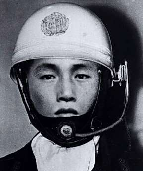

УРОК СКРОМНОСТИ
10 декабря 1968 года произошло самое крупное ограбление в японской криминальной истории (которая впрочем довольно скудна яркими событиями по причине национальной законопослушности).
Гоп-стоп был наглый и очень простой.
Полицейский на мотоцикле остановил банковский автомобиль, перевозивший 300 миллионов иен. Из почтения к полицейскому мундиру и из японской дисциплинированности водитель затормозил. Сказалась и общая японская непуганность — в стране Восходящего Солнца грабежи редки. Молодой патрульный сказал, что получено экстренное сообщение: к броневику прикреплено взрывное устройство, отойдите на безопасное расстояние. Перед этим была проведена подготовительная работа — директор банка получил несколько писем с угрозами.
Храбрец полез под автомобиль. Оттуда повалил дым. Шофер и трое охранников кинулись врассыпную. Тогда грабитель сел за руль и преспокойно уехал.
«Ищут давно, Но не могут найти парня какого-то лет двадцати». (Фоторобот злодея).
Преступника долго искали, но не нашли. Следов он не оставил, деньгами не швырялся. В конце концов дело закрыли.
Публику много лет ужасно интриговало, кто же этот ловкач. По истечении 20-летнего срока давности пресса кинула клич: «Отзовись, покажи себя, тебе теперь ничего не будет! Прославишься, еще и денег заработаешь! Про тебя кино снимут!».
Но тайна так и осталась тайной. Герой не откликнулся.
Будем учиться у японцев — не грабить инкассаторов, а скромности.